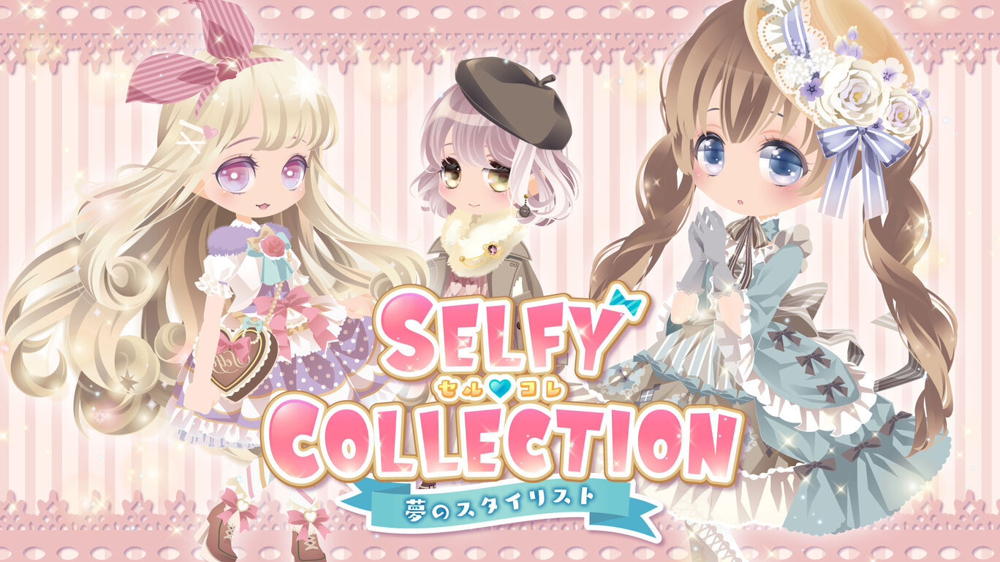
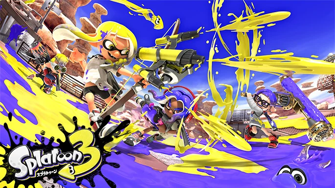
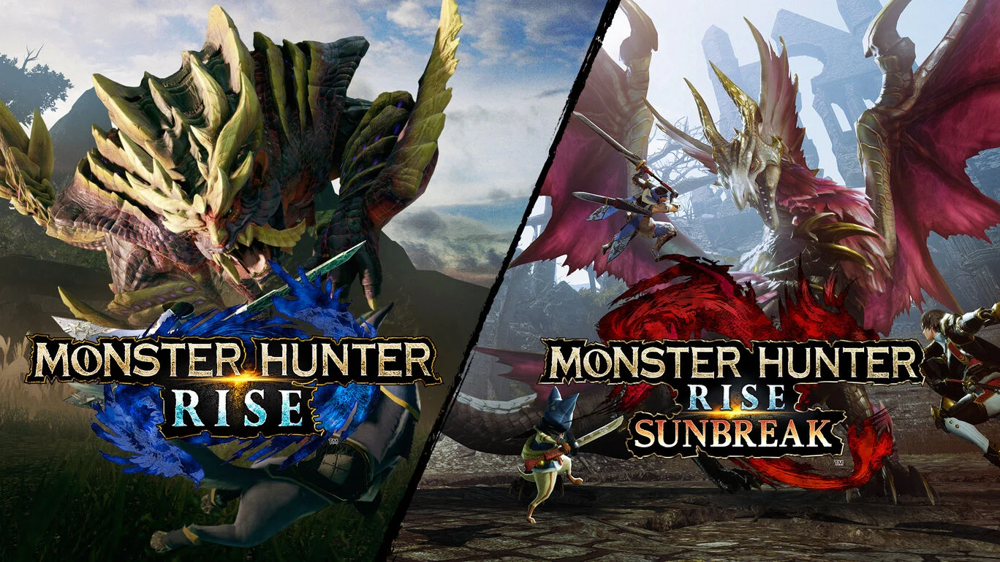

魔女的梳妆台
我是nzhuangtao，来自广东，是一名前端开发者，喜欢一切美丽的事物，有代码洁癖，工作中热衷于用最精简的代码实现最多的功能， 与大多数开发不一样，我更喜欢原生技术，不喜各类框架。业余热爱游戏，喜欢收集各类橡皮。
- 工作 前端开发
- 毕业院校 佛山科学技术学院
- 专业 网络工程
- 擅长的技术 animate.js
- 特点 挑食
目前正在一家家电公司担任前端开发，主要负责前端安全与体验优化工作， 主要使用到的技术有vue2.x,echarts,animate.js,pixi.js。
业余时间主要学习的还是css动画的设计与实现，比起功能复杂，使用各种 高大上的技术与框架，我更喜欢美观，提升体验上的技术。除此之外还在学习制作 游戏的技术，例如unreal,cocos。我目前正在尝试制作一款横板动作游戏。
-
 宝可梦系列
宝可梦系列虽然ns两代作品的质量都让我很不满意， 尤其是剑盾开始全图鉴成为过去，对我这种 收集党很不友好，最喜欢的mega系统估计在 6代复刻前也不会再有了，但宝可梦毕竟是 宝可梦，骂完后还是要真香。
-
 异度之刃2没玩过1，比起3我更喜欢2，当年被群友安利，因前期慢热 一度曾想放弃，群友的疯狂夸赞成为了我玩下去的动力，到最后 开始成迷。剧情很普通的王道剧情，主角拯救世界，但起起伏伏 让我感到心潮澎湃。
异度之刃2没玩过1，比起3我更喜欢2，当年被群友安利，因前期慢热 一度曾想放弃，群友的疯狂夸赞成为了我玩下去的动力，到最后 开始成迷。剧情很普通的王道剧情，主角拯救世界，但起起伏伏 让我感到心潮澎湃。 -

selfy collection 夢のスタイリスト一款换装游戏，但是没有中文，玩法是靠帮别人化妆服饰搭配赚钱的。非常休闲，画风可爱，可供搭配多 设计的也很优秀，有对应季节才会出现的服装。
-

喷射战士与众不同的射击游戏，比起3各人更喜欢2，喜欢玩狙和泡泡。有单机也有联机， 不过这游戏的魅力肯定还是联机。除了对战外，还有一起合作的打工模式。
-

怪物猎人玩过崛起和世界，两作各有优劣，论画质的话肯定还是世界，但世界的设定很复杂， 打的不够爽，地图吃屎，尤其是森林。他让我知道一款游戏过于写实也不是优点。